The first computer game I ever played (other than minesweeper and neopets flash games) was Neverwinter Nights. I loved it, and I started playing a bunch of other CRPGs as well. Later on, we got an old X-Box from my dad's friend and went looking through the game store for something to play on it. I found The Elder Scrolls: Morrowind and have been obsessed with Elder Scrolls games ever since.
I haven't been playing a lot of games the past couple of years. When I do, it's mostly just building houses and stuff in Terraria and Sims 4 and then never actually playing the main game. However, my partner convinced me to play Baldur's Gate 3, and I really enjoyed it. I've put a few hundred hours into it with a few different characters, it's super addicting.
 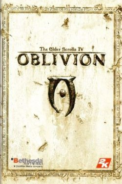
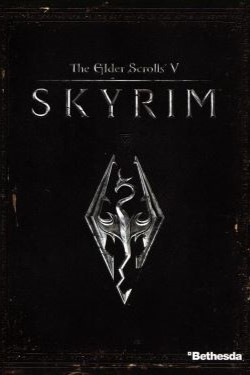
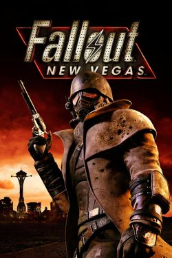
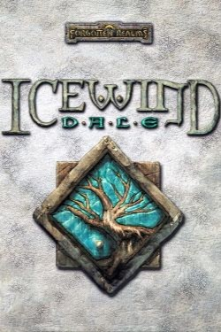
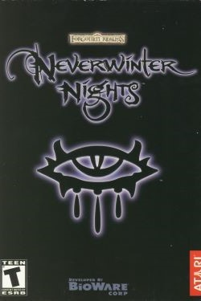
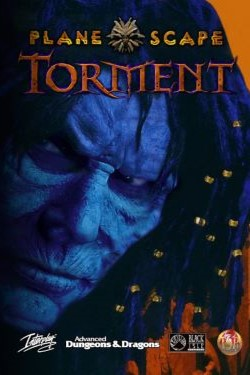
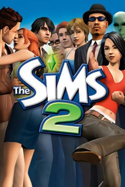
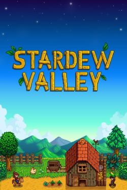
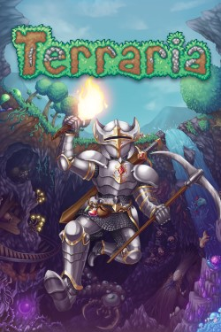
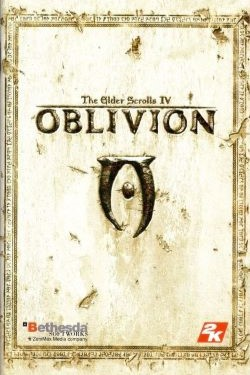
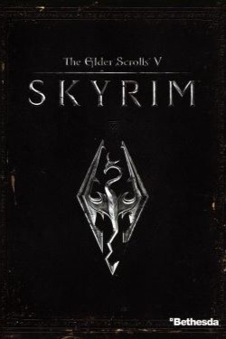
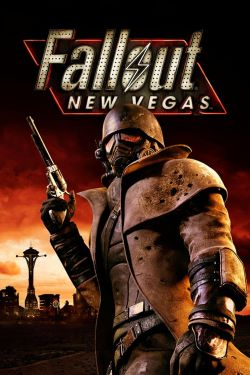
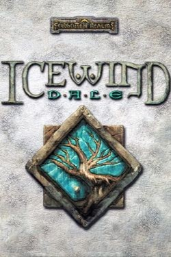
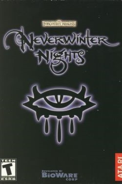
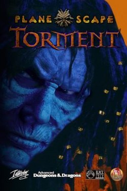
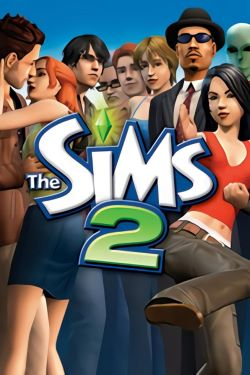
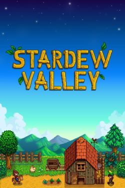
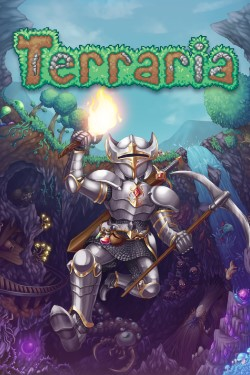
 Back
Back